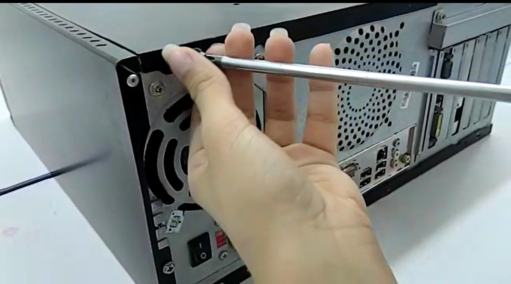
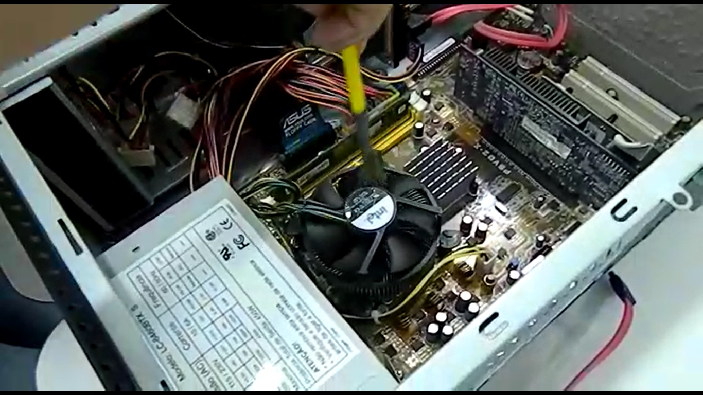

Por que remover o excesso de poeira?
Com o computador ligado, o sistema de refrigeração, que funciona com ventiladores, força a entrada de ar na parte interna do computador, levando para dentro a poeira do ar, impregnada por poluentes químicos.
Segundo Eder Moreira Lelis — professor do Curso à Distância CPT Manutenção Preventiva de Computadores —, esses poluentes não danificarão um computador sozinhos, mas, junto com a umidade, que pode vir na forma de maresia, produzindo efeitos extremamente danosos. Além disso, a poeira cria uma camada de óxido nos pinos, impedindo a passagem de corrente elétrica e causando mau contato.
Dessa forma, evitar o excesso de poeira é necessário para manter o computador funcionando corretamente.
Como remover o excesso de poeira?
Atenção!
É de extrema importância que, antes de começar a manutenção, a eletricidade estática do seu corpo seja descarregada. Isso pode ser feito tocando na parte metálica do gabinete com o computador conectado na tomada.
Intrumentos necessários:
- Chave philips
- Pano seco
- Pincel
Passos:
- Com a chave philips, remova os parafusos da parte de trás do gabinete e a retire; 
- Com o pincel, limpe a poeira dos componentes; 
- Limpe os cabos com o pano seco.